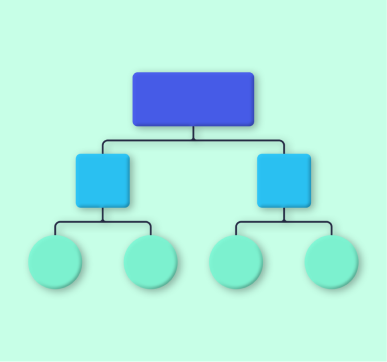

프로그램 운영을 쉽게 하는 관리 지원 도구
DASplanner
워크플로우를 간편하게 편집하고 조건에 맞춰 실행할 수 있어요.
다스플래너와 함께 관리하면 업무의 여유가 생길거에요!
다운로드 바로가기
DASplanner 주요 기능

워크플로우
편집
실행 기준 설정
로그 조회
Jupyter Lab
연동
더 간단해진 프로세스 관리!
프로그램
개발 언어와 작업 시기가 달라도
워크플로우를 쉽게 편집할 수 있습니다. 실행되는 순서와 기본적으로 등록이 되는 정보도 수정이 가능합니다. 운영자가 꼭 개발자가 아니더라도 체계적으로 프로세스를 관리할 수 있답니다.
원하는 기준으로 실행!
일정한
시간마다 주기적으로 프로그램이 실행
되거나, 특정한
이벤트의 청취를 기준
으로 설정할 수 있습니다. 시간 뿐만이 아니라 요일 등의 기준으로 반복도 가능합니다. 수동으로 일일이 체크하지 않으니 번거로움이 줄어듭니다.
기록은 꼼꼼하게!
워크플로우를 통해 실행된 프로그램들의
이력은 모두 기록됩니다.
어떤 작업을 언제 시작하고 끝냈는지, 성공적으로 마쳤는지 로그를 통해 조회할 수 있습니다. 분석 수행 결과를 담은 데이터도 확인이 가능합니다.
익숙한 개발환경인 Jupyter Lab과 연동!
빅데이터 분석 프로젝트에서 대중적으로 사용되는
Jupyter Lab과 연동이 가능
합니다. 편안한 개발 환경에서 소스 코드를 공유받아 편집할 수 있답니다. 필요한 부분을 검색해서 즉각 삽입할 수 있으니 작업이 더욱 빠르고 편해집니다.